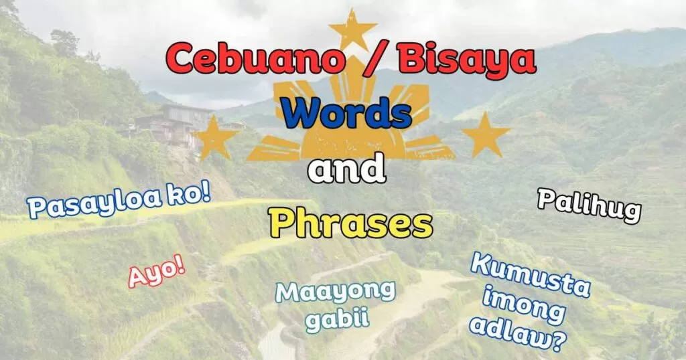
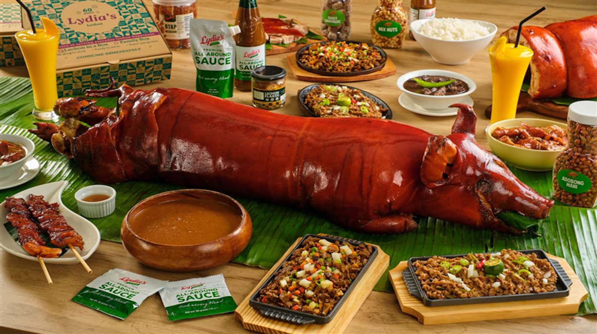

Cultures of Cebu
Sinulog Festival

The Sinulog Festival is one of the most famous festivals in Cebu. It is celebrated every January in honor of the Santo Niño. The festival features street dancing, colorful costumes, and cultural presentations.
Cebuano Language

Cebuano is the main language spoken in Cebu. It is also widely used in many parts of the Visayas and Mindanao. The language is an important part of the identity and culture of the Cebuano people.
Cebuano Cuisine

Cebu is famous for its delicious food, especially lechon. Cebu lechon is known for its crispy skin and flavorful meat. Many tourists visit Cebu just to try this popular dish.